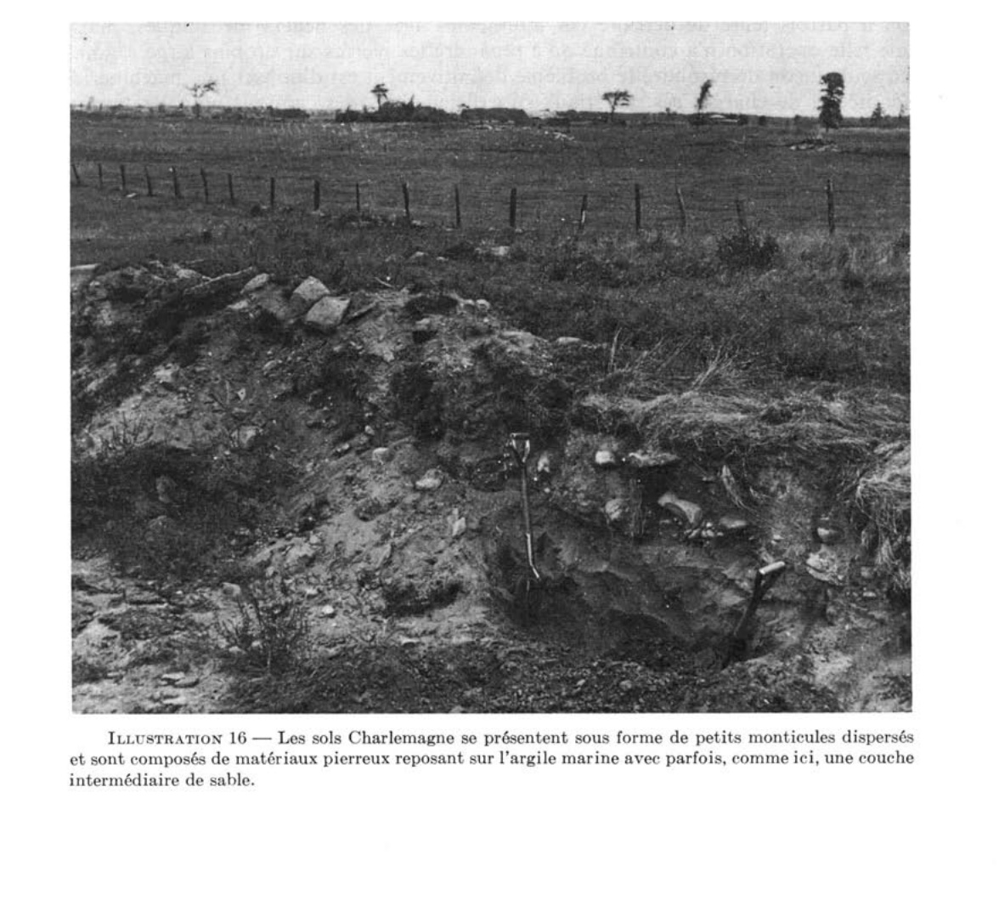

Identification & Caractéristiques Générales
Le matériau originel de la série Charlemagne consiste en un dépôt quaternaire hétéroclite d'origine glacio-lacustre ou fluvioglaciaire, assimilable à un till de transport par les glaces flottantes du fleuve pré-Saint-Laurent. Ce matériau meuble, composé d'un mélange désordonné de sable, de limon, d'argile, de gravier et de blocs erratiques, repose directement sur l'argile marine Champlain ou en est séparé par de minces strates alluvionnaires. Sur le plan géomorphologique, ces dépôts se manifestent principalement sur la terrasse inférieure des Basses-Terres du Saint-Laurent, sous forme de longues collines étroites, de crêtes irrégulières ou de petits monticules discontinus qui contrastent fortement avec les plaines argileuses environnantes.
Sur le plan morphologique, le profil pédologique présente un drainage naturel généralement bon à excessif, favorisé par une perméabilité interne modérée à rapide dans les horizons supérieurs. La texture de la surface varie du loam au loam sableux ou sablo-graveleux, souvent caractérisée par une forte pierrosité et une pierrosité de surface abondante constituée de fragments lithiques variés de grès, de schiste argileux, de calcaire et de quartzite. La réaction du sol (pH) oscille de moyennement acide dans les horizons supérieurs à faiblement alcalin en profondeur selon la prédominance des fragments calcaires. Le substratum, rencontré à profondeur variable, montre généralement un contraste textural net avec les couches sus-jacentes.
Les aptitudes agronomiques de la série Charlemagne sont fortement limitées par la charge pondérale et volumétrique en pierres et en blocs, ce qui restreint considérablement la mise en valeur culturale. Bien que souvent défrichés, ces reliefs constituent des obstacles majeurs à la mécanisation agricole en raison de l'interruption de la régularité des parcelles et des risques inhérents pour les bris d'équipements aratoires. Les tentatives d'aménagement par l'enfouissement ou le bris mécanique des blocs s'avèrent inefficaces, l'excavation et le transport hors des terres demeurant les seules méthodes d'assainissement durables, souvent valorisées par la demande locale en matériaux de remplissage. En conséquence, les superficies non aménagées sont généralement maintenues à l'état de boisés ou cantonnées à des usages marginaux tels que des pâturages non améliorés.
Caractères Distinctifs & Morphologie Génétique (Comté de Saint-hyacinthe — Page 257)
- Massif ou amorphe : masse cohérente sans orientation distincte de lignes naturelles de faiblesse.
- SUBSTRATUM : Réfère à la partie du sol se trouvant sous le solum.
- TALUS : Amoncellement meuble et incliné de fragments de roches accumulés au pied d'une falaise ou d'une pente abrupte.
- TAXON : Terme général désignant toute classe appartenant à l'un ou l'autre des niveaux de catégories d'un système taxonomique de classification. On appelle jonctions de taxon des sols qui répondent approximativement, mais pas tout à fait, aux critères d'une série. Au lieu de former une unité cartographique spécifique, ces sols sont associés à la série de sols dont ils divergent quelque peu.
- TEINTE : Voir MUNSELL
- TERRASSE : Plaine généralement étroite, presque plate, bordant une rivière, un lac ou une mer.
- TEXTURE : Proportions relatives des différentes fractions granulométriques (sable, limon, argile) dans une masse de sol.
Classification Taxonomique & Environnement Pédologique
| Ordre Pédologique | Brunisolique |
|---|---|
| Grand Groupe (SCSS) | Brunisol sombrique |
| Sous-Groupe Taxonomique | Brunisol sombrique gleyifié |
| Famille Pédologique | Squelettique-loameuse, mixte sableux, neutre |
| Mode de Dépôt Parental | Glaciel sur fluviatile |
| Classe de Drainage Naturel | Imparfaitement drainé |
| Régime Thermique & Humidité | Doux / Humide |
Description Morphologique du Profil Type
Séquences génétiques des horizons pédologiques caractérisant le profil type représentatif de la série Charlemagne :
Profil forestier (sous boisé) — Comté de L'assomption
✓ Source : Comté de L'assomption — Page 78Couleur Munsell : 10YR 3/2
Structure & Consistance : Granuleuse
Description morphologique : Loam à loam sableux brun rougeâtre foncé à brun grisâtre foncé (5YR-10YR 3/2); fine structure granuleuse; friable; pierreux; pH 5.8 à 6.5.
Couleur Munsell : 5YR 4/3
Structure & Consistance : Granuleuse
Description morphologique : Loam sableux à loam graveleux brun rougeâtre (5YR 4/3); fine structure granuleuse; très friable; pierres; pH 5.8 à 6.5.
Couleur Munsell : 7.5YR 4/2
Structure & Consistance : Monogranulaire
Description morphologique : Loam sableux à loam gravelo-sableux brun (7.5YR 4/2-4/4); pierres; structure monogranulaire; lâche; pH 6.4 à 7.0.
Couleur Munsell : Non précisée
Structure & Consistance : Polyédrique à granulaire
Description morphologique : Loam à loam sableux ou sablo-graveleux brun grisâtre pâle; pierres nombreuses; pH 6.5 à 7.2.
Profil représentatif — Sols de l'île de Montréal
✓ Source : Sols de l'île de Montréal — Page 55Couleur Munsell : Non précisée
Structure & Consistance : En miettes
Description morphologique : Terre franche ou terre franche sableuse brun rougeâtre foncé ou brun grisâtre foncé (5yr10yr3/2); faible structure en miettes; friable; cailloux et boulders; pH 6·5 ou moins.
Couleur Munsell : Non précisée
Structure & Consistance : En miettes moyenne à fine
Description morphologique : Terre franche sableuse ou graveleuse brun rougeâtre (5yr4/2-4/3); faible structure en miettes moyenne à fine; très friable; cailloux; pierres.
Couleur Munsell : Non précisée
Structure & Consistance : Grenue
Description morphologique : Terre franche sableuse grossière ou terre franche sablo-graveleuse brune (7.5yr4/2-4/4) contenant plusieurs cailloux; structure grenue; lâche; pH 6·5 à 7·0.
Couleur Munsell : Non précisée
Structure & Consistance : Polyédrique à granulaire
Description morphologique : Terre franche sablo-graveleuse contenant du sable ou des boulders. Argile grise.
Profil forestier / boisé — Comté de Saint-hyacinthe
✓ Source : Comté de Saint-hyacinthe — Page 28Couleur Munsell : 10YR 2/2
Structure & Consistance : Granulaire
Description morphologique : Sable loameux; brun très foncé (10YR 2/2); structure granulaire, fine, assez développée; consistance très friable; très poreux; racines très nombreuses, grosses à très fines, horizontales; fragments grossiers constitués de graviers fins à grossiers; limite nette, ondulée, réaction très fortement acide.
Couleur Munsell : 10YR 5/8
Structure & Consistance : Granulaire
Description morphologique : Sable loameux; graveleux; brun jaunâtre (10YR 5/8); structure granulaire, fine, peu à assez développée; consistance très friable; très poreux; racines assez abondantes, grosses à très fines, horizontales; fragments grossiers constitués de graviers fins à grossiers et de cailloux; limite graduelle, ondulée; réaction fortement acide.
Couleur Munsell : 10YR 5/7
Structure & Consistance : Granulaire
Description morphologique : Sable graveleux; brun jaunâtre (10YR 5/7); structure granulaire, fine, peu développée; consistance meuble; très poreux; racines assez abondantes, moyennes à très fines, horizontales; fragments grossiers constitués de graviers fins à grossiers et de cailloux; limite nette, ondulée; réaction fortement acide.
Couleur Munsell : 10YR 4/4
Structure & Consistance : Polyédrique à granulaire
Description morphologique : Sable graveleux; brun jaunâtre foncé (10YR 4/4); particulaire; consistance meuble; très poreux; racines peu abondantes, moyennes à très fines, horizontales; fragments grossiers constitués de graviers fins à grossiers et de cailloux; limite nette, régulière; réaction faiblement acide.
Couleur Munsell : 5Y 6/2 (matrice), 10YR 5/6 (marbrures)
Structure & Consistance : Polyédrique à granulaire
Description morphologique : Argile; gris brunâtre clair (2,5Y 6/2); mouchetures brun jaunâtre (10YR 5/6), peu nombreuses, fines, très contrastées; massive; consistance très ferme; peu poreuse; fragments grossiers constitués de graviers fins à moyens, limite graduelle, régulière; réaction neutre.
Couleur Munsell : 5Y 6/2 (matrice), 5Y 7/2 (marbrures)
Structure & Consistance : Polyédrique à granulaire
Description morphologique : Loam limono-argileux; gris brunâtre clair (2,5Y 6/2) et gris clair (2,5Y 7/2); mouchetures brun jaunâtre (10YR 5/6), peu nombreuses, fines, très contrastées; massive; consistance très ferme; peu poreuse; limite graduelle, régulière; réaction neutre.
Couleur Munsell : 5Y 5/2 (matrice), 10YR 5/6 (marbrures)
Structure & Consistance : Polyédrique à granulaire
Description morphologique : Argile limoneuse; brun grisâtre (2,5Y 5/2); mouchetures brun jaunâtre (10YR 5/6), peu nombreuses, fines, très contrastées; massive; consistance très ferme; peu poreuse; réaction neutre.
Profil cultivé (agricole) — Comté de Verchères
✓ Source : Comté de Verchères — Page 31Couleur Munsell : 10YR 3/3
Structure & Consistance : Granulaire
Description morphologique : Loam sableux graveleux; brun foncé (10YR 3/3); structure granulaire, moyenne, assez développée; consistance friable; assez poreux; fragments grossiers constitués de graviers fins à grossiers, de moellons et de pierres; limite nette, ondulée; réaction neutre.
Couleur Munsell : 10YR 5/6
Structure & Consistance : Granulaire
Description morphologique : Loam sableux grossier très graveleux; brun jaunâtre (10YR 5/6); structure granulaire, moyenne, assez développée; consistance friable; assez poreux; fragments grossiers constitués de graviers fins à grossiers, de moellons et de pierres; limite graduelle, irrégulière; réaction moyennement acide.
Couleur Munsell : 10YR 5/4 (matrice), 10YR 5/6 (marbrures)
Structure & Consistance : Granulaire
Description morphologique : Loam sableux grossier graveleux; brun jaunâtre (10YR 5/4); mouchetures brun jaunâtre (10YR 5/6), très nombreuses, fines, assez contrastées; structure granulaire, moyenne, assez développée; consistance très friable; très poreux; fragments grossiers constitués de graviers fins à grossiers, de moellons et de pierres; limite nette, régulière; réaction moyennement acide.
Couleur Munsell : 5Y 5/3 (matrice), 10YR 5/6 (marbrures)
Structure & Consistance : Polyédrique subangulaire
Description morphologique : Loam sablo-argileux graveleux; brun grisâtre à brun olivâtre clair (2,5Y 5/3); mouchetures brun jaunâtre (10YR 5/6), très nombreuses, fines, très contrastées; structure polyédrique subangulaire, fine, peu développée; consistance friable; peu poreux; fragments grossiers constitués de graviers fins à grossiers, de moellons et de pierres; limite graduelle, régulière; réaction faiblement acide.
Couleur Munsell : 5Y 5/3 (matrice), 10YR 5/6 (marbrures)
Structure & Consistance : Polyédrique à granulaire
Description morphologique : Argile lourde; olive (5Y 5/3); mouchetures brun jaunâtre (10YR 5/6), très nombreuses, fines, très contrastées; massive; consistance ferme; peu poreuse; réaction neutre.
Profil cultivé (agricole) — Comté de Verchères
✓ Source : Comté de Verchères — Page 33Couleur Munsell : Non précisée
Structure & Consistance : Granulaire
Description morphologique : Loam sableux graveleux; brun grisâtre très foncé à brun grisâtre foncé (10YR 3,5/2); structure granulaire, moyenne à grosse, assez développée; constance très friable; assez poreux; fragments grossiers constitués de graviers fins à grossiers et de moellons; limite nette, ondulée; réaction fortement acide.
Couleur Munsell : 10YR 5/8
Structure & Consistance : Granulaire
Description morphologique : Loam sableux graveleux; brun jaunâtre (10YR 5/8); structure granulaire, fine, peu développée; constance très friable à meuble; très poreux; fragments grossiers constitués de graviers fins à grossiers et de moellons; limite nette, régulière; réaction fortement acide.
Couleur Munsell : 5Y 5/4 (matrice), 10YR 4/6 (marbrures)
Structure & Consistance : Granulaire
Description morphologique : Loam sableux fin graveleux; brun olivâtre clair (2,5Y 5/4); mouchetures brun jaunâtre foncé (10YR 4/6), très nombreuses, moyennes, assez contrastées; structure granulaire, fine à moyenne, peu à assez développée; constance très friable; assez poreux; fragments grossiers constitués de graviers fins à grossiers et de moellons; limite nette, régulière; réaction moyennement acide.
Couleur Munsell : 5Y 5/3 (matrice), 10YR 4/6 (marbrures)
Structure & Consistance : Polyédrique à granulaire
Description morphologique : Loam sableux graveleux; brun grisâtre à brun olivâtre clair (2,5Y 5/3); mouchetures brun jaunâtre foncé (10YR 4/6), très nombreuses, fines, très contrastées; massif; constance friable; peu poreux; fragments grossiers constitués de graviers fins à grossiers et de moellons; limite nette, régulière; réaction faiblement acide.
Couleur Munsell : 5Y 5/2 (matrice), 5YR 4/4 (marbrures)
Structure & Consistance : Lamellaire
Description morphologique : Loam limoneux; brun grisâtre (2,5Y 5/2); mouchetures brun foncé à brun (7,5YR 4/4), très nombreuses, moyennes, très contrastées; massif se subdivisant en structure lamellaire, moyenne et grosse, peu développée; constance friable; peu poreux; réaction neutre.
Profil forestier (sous boisé) — Comté de Verchères — Variante non calcaire
✓ Source : Comté de Verchères — Page 35Couleur Munsell : Non précisée
Structure & Consistance : Polyédrique à granulaire
Description morphologique : Litière constituée de feuilles et de brindilles; racines peu nombreuses, très fines, horizontales; limite abrupte, régulière; réaction très fortement acide.
Couleur Munsell : Non précisée
Structure & Consistance : Polyédrique à granulaire
Description morphologique : Sable fin loameux; noir à gris très foncé (10YR 2,5/1); massif; consistance très friable; peu poreux; racines peu nombreuses, très fines, horizontales; limite nette, ondulée; réaction très fortement acide.
Couleur Munsell : Non précisée
Structure & Consistance : Polyédrique à granulaire
Description morphologique : Sable très fin loameux; gris brunâtre clair à gris clair (2,5Y 6,5/2); massif; consistance très friable; peu poreux; racines peu nombreuses, très fines, horizontales; limite nette, ondulée; réaction très fortement acide.
Couleur Munsell : 10YR 4/5
Structure & Consistance : Polyédrique à granulaire
Description morphologique : Loam sableux très fin; brun grisâtre foncé à brun grisâtre (2,5Y 4,5/2); mouchetures brun jaunâtre foncé (10YR 4/5), très nombreuses, fines, très contrastées; massif; consistance très friable; peu poreux; racines peu nombreuses, très fines, horizontales; présence de concrétions sphériques de fer; limite abrupte, régulière; réaction fortement acide.
Couleur Munsell : 5Y 5/2 (matrice), 10YR 5/8 (marbrures)
Structure & Consistance : Polyédrique subangulaire
Description morphologique : Argile; gris olivâtre (5Y 5/2); mouchetures brun jaunâtre (10YR 5/8), très nombreuses, fines, très contrastées; structure polyédrique subangulaire, fine, peu développée; consistance ferme; assez poreuse; limite graduelle, régulière; réaction neutre.
Couleur Munsell : 10YR 5/8
Structure & Consistance : Polyédrique à granulaire
Description morphologique : Argile lourde; gris olivâtre à gris olivâtre clair (5Y 5,5/2); mouchetures brun jaunâtre (10YR 5/8), très nombreuses, fines, très contrastées; massive; consistance très ferme; peu poreuse; réaction faiblement alcaline.
Profil cultivé (agricole) — Comté de Verchères
✓ Source : Comté de Verchères — Page 146Couleur Munsell : 10YR 3/3
Structure & Consistance : Granulaire
Description morphologique : Loam sableux graveleux; brun foncé (10YR 3/3); structure granulaire, moyenne, fortement développée; consistance friable; modérément poreux; fragments grossiers constitués de graviers fins à grossiers, de cailloux et de pierres; limite nette, ondulée; réaction neutre.
Couleur Munsell : 10YR 5/6
Structure & Consistance : Granulaire
Description morphologique : Loam sableux grossier très graveleux; brun jaunâtre (10YR 5/6); structure granulaire, moyenne, modérément développée; consistance friable; modérément poreux; fragments grossiers constitués de graviers fins à grossiers, de cailloux et de pierres; limite graduelle, irrégulière; réaction moyennement acide.
Couleur Munsell : 10YR 5/4 (matrice), 10YR 5/6 (marbrures)
Structure & Consistance : Granulaire
Description morphologique : Loam sableux grossier graveleux; brun jaunâtre (10YR 5/4); marbrures brun jaunâtre (10YR 5/6), nombreuses, fines, distinctes; structure granulaire, moyenne, modérément développée; consistance très friable; très poreux; fragments grossiers constitués de graviers fins à grossiers, de cailloux et de pierres; limite nette, régulière; réaction moyennement acide.
Couleur Munsell : 5Y 5/3 (matrice), 10YR 5/6 (marbrures)
Structure & Consistance : Polyédrique subangulaire
Description morphologique : Loam sablo-argileux graveleux; brun grisâtre à brun olivâtre clair (2,5Y 5/3); marbrures brun jaunâtre (10YR 5/6), nombreuses, fines, marquées; structure polyédrique subangulaire, fine, faiblement développée; consistance friable; peu poreux; fragments grossiers constitués de graviers fins à grossiers, de cailloux et de pierres; limite graduelle, régulière; réaction faiblement acide.
Couleur Munsell : 5Y 5/3 (matrice), 10YR 5/6 (marbrures)
Structure & Consistance : Polyédrique à granulaire
Description morphologique : Argile lourde; olive (5Y 5/3); marbrures brun jaunâtre (10YR 5/6), nombreuses, fines, marquées; massive; consistance ferme; peu poreuse; réaction neutre.
Profils Photographiques & Planches de Terrain
Documents iconographiques, figures pédologiques et coupes de terrain documentées dans les mémoires d'inventaire pour de la série Charlemagne :

Propriétés Physico-Chimiques & Analyses de Laboratoire
| Horizon | Prof. (pces/cm) | Sable % | Limon % | Argile % | pH | C % | N % | Ca éch. | Mg éch. | K éch. | H+ éch. | Bases tot. | C.E.C. (meq/100g) | Saturation % | ||
|---|---|---|---|---|---|---|---|---|---|---|---|---|---|---|---|---|
| 1A | 7,20 | D | 3,04 | M | 2198 | M | 522,41 | TE | 71,86 | F | 101,02 | E | 14,44 | TF | 16,95 | M |
| 2A | 6,05 | C | 1,87 | M | 2463 | M | 344,00 | M | 62,89 | F | 14,56 | TF | 11,60 | TF | 17,85 | M |
| 3A | 5,57 | B | 0,86 | F | 755 | F | 61,53 | F | 49,59 | TF | 10,33 | TF | 42,13 | F | 5,85 | TF |
| 4A | 6,09 | C | 2,34 | M | 2413 | M | 336,25 | M | 52,19 | F | 14,29 | TF | 9,10 | TF | 19,46 | M |
| 5A | 6,36 | C | 1,64 | F | 1799 | F | 274,25 | M | 48,17 | TF | 21,14 | F | 13,05 | TF | 13,73 | M |
| 6A | 5,85 | B | 1,40 | F | 1639 | F | 196,07 | F | 41,77 | TF | 10,87 | TF | 15,85 | F | 13,37 | M |
| 7A | 5,70 | B | 1,64 | F | 1824 | F | 228,38 | M | 77,87 | F | 12,84 | TF | 21,81 | F | 15,16 | M |
| 8A | 5,75 | B | 2,42 | M | 1890 | F | 243,10 | M | 115,53 | M | 10,25 | TF | 13,49 | TF | 18,21 | M |
| 9A | 5,48 | A | 1,79 | M | 1554 | F | 258,53 | M | 86,99 | F | 23,01 | F | 29,29 | F | 16,15 | M |
| 10A | 5,51 | B | 1,40 | F | 1478 | F | 262,51 | M | 44,84 | TF | 13,44 | TF | 14,87 | TF | 15,71 | M |
| 10B | 5,81 | B | 0,60 | - | 1587 | F | 450,05 | E | 49,21 | TF | 26,91 | F | 9,91 | TF | 19,46 | M |
| 10C | 6,79 | - | 0,04 | - | 346 | TF | 144,77 | F | 17,89 | TF | 18,03 | F | 9,57 | TF | 2,63 | TF |
| 11A | 5,64 | B | 1,77 | M | 1390 | F | 174,58 | F | 93,19 | F | 7,84 | TF | 26,58 | F | 11,58 | F |
| 12A | 5,51 | B | 1,95 | M | 1450 | F | 152,99 | F | 178,87 | E | 6,41 | TF | 53,08 | F | 14,27 | M |
| 13A | 5,44 | A | 1,66 | F | 1330 | F | 127,61 | F | 85,07 | F | 7,36 | TF | 35,27 | F | 14,80 | M |
| 14A | 5,40 | A | 1,34 | F | 1212 | F | 185,87 | F | 73,09 | F | 10,74 | TF | 32,83 | F | 12,57 | M |
| 15A | 5,45 | A | 0,94 | F | 734 | F | 79,22 | F | 31,63 | TF | 9,48 | TF | 15,35 | TF | 9,01 | F |
| 16A | 6,39 | C | 2,34 | M | 2199 | M | 280,61 | M | 54,98 | F | 15,45 | F | 20,40 | F | 16,85 | M |
| 17A | 5,79 | B | 1,73 | M | 1973 | M | 327,27 | M | 73,68 | F | 10,61 | TF | 21,24 | F | 17,67 | M |
| 18A | 5,55 | B | 1,18 | F | 1401 | F | 223,30 | M | 34,53 | TF | 22,46 | F | 14,55 | TF | 14,98 | M |
| 19A | 6,48 | C | 1,73 | M | 1868 | F | 281,49 | M | 47,18 | TF | 25,97 | F | 130,82 | TE | 16,06 | M |
| 20A | 6,43 | C | 2,11 | M | 2138 | M | 248,90 | M | 53,86 | F | 12,89 | TF | 19,27 | TF | 16,86 | M |
| 21A | 6,47 | C | 2,04 | M | 2124 | M | 360,14 | E | 137,74 | M | 11,60 | TF | 20,61 | F | 17,49 | M |
| 22A | 5,46 | A | 1,48 | F | 1144 | F | 111,34 | F | 128,38 | M | 7,20 | TF | 76,02 | M | 11,76 | F |
| 23A | 6,05 | C | 2,11 | M | 2530 | M | 373,81 | E | 89,04 | F | 13,94 | TF | 14,99 | TF | 17,13 | M |
| 24A | 6,71 | D | 1,48 | F | 2458 | M | 433,54 | E | 83,25 | F | 32,48 | F | 11,69 | TF | 17,04 | M |
| 24B | 7,71 | E | 0,29 | - | 2029 | M | 531,03 | TE | 90,28 | F | 77,54 | E | 6,61 | TF | 15,88 | M |
| 24C | 8,08 | - | 0,30 | - | 2764 | M | 980,34 | TE | 269,61 | E | 163,90 | TE | 12,86 | TF | 20,08 | M |
| 25A | 5,96 | B | 1,44 | F | 1244 | F | 147,43 | F | 41,31 | TF | 9,75 | TF | 21,95 | F | 11,94 | F |
| 26A | 5,53 | B | 1,78 | M | 1883 | F | 401,77 | E | 65,90 | F | 22,62 | F | 54,73 | F | 19,64 | M |
| 27A | 5,65 | B | 1,64 | F | 1537 | F | 310,41 | M | 97,75 | F | 11,54 | TF | 31,54 | F | 18,47 | M |
| 28A | 5,37 | A | 1,76 | M | 1094 | F | 151,39 | F | 48,51 | TF | 12,48 | TF | 25,64 | F | 21,78 | M |
| 28B | 6,36 | C | 0,19 | - | 544 | TF | 138,43 | F | 24,52 | TF | 8,82 | TF | 8,12 | TF | 6,03 | F |
| 28C | 6,15 | - | 0,15 | - | 400 | TF | 167,13 | F | 29,19 | TF | 23,65 | F | 8,69 | TF | 3,62 | TF |
| 29A | 5,41 | A | 1,79 | M | 915 | F | 113,44 | F | 62,39 | F | 11,80 | TF | 23,68 | F | 14,09 | M |
| 30A | 6,51 | D | 2,73 | M | 2269 | M | 263,47 | M | 89,84 | F | 18,17 | F | 36,60 | F | 19,82 | M |
| 31A | 6,20 | C | 2,18 | M | 2343 | M | 264,87 | M | 69,18 | F | 20,14 | F | 23,60 | F | 18,74 | M |
| 32A | 5,85 | B | 2,02 | M | 1711 | F | 245,51 | M | 134,50 | M | 12,20 | TF | 32,17 | F | 16,24 | M |
| 33A | 6,75 | D | 2,96 | M | 2001 | M | 408,08 | E | 118,64 | M | 40,11 | M | 16,13 | TF | 19,82 | M |
| 34A | 6,71 | D | 2,17 | M | 3095 | M | 579,09 | TE | 104,52 | M | 29,40 | F | 10,53 | TF | 24,01 | M |
| 35A | 6,17 | C | 1,20 | F | 2049 | M | 431,36 | E | 69,11 | F | 20,09 | F | 10,72 | TF | 18,28 | M |
| 36A | 6,27 | C | 2,73 | M | 1987 | M | 227,07 | M | 169,82 | M | 10,11 | TF | 26,98 | F | 20,17 | M |
| 37A | 6,25 | C | 2,18 | M | 1959 | M | 293,79 | M | 82,46 | F | 17,64 | F | 20,45 | F | 18,83 | M |
Particularités Régionales, Phases & Variantes Pédologiques
Déclinaisons régionales, faciès texturaux, phases d'érosion ou de pierrosité et variantes cartographiées par étude pour de la série Charlemagne :
| Étude Régionale | Symbole | Appellation / Phase / Variante | Différenciation avec la série type (Analyse pédologique) |
|---|---|---|---|
| Comté de L'assomption | Cm |
Charlemagne loam sableux à loam | Modalité modale de référence (type de base de la série). |
| Les sols de l’Île de Montréal | Cm |
Charlemagne loam sableux | Conforme à la série type de référence (caractéristiques texturales et drainage identiques). |
| Comté de Richelieu | CL2gp |
Charlemagne loam sableux graveleux pierreux | Phase pierreuse (abondance de cailloux et blocs en surface). |
CL3gp |
Charlemagne loam graveleux pierreux | Phase pierreuse (abondance de cailloux et blocs en surface); Faciès loameux plus fin et équilibré que le loam sableux de référence (meilleure rétention en eau et nutriments). | |
CLb2gp |
Charlemagne substratum loameux loam sableux très grav. pierreux | Phase pierreuse (abondance de cailloux et blocs en surface). | |
| Comté de Saint-hyacinthe | CL2gp |
Charlemagne loam sableux graveleux pierreux | Phase pierreuse (abondance de cailloux et blocs en surface). |
CL3gp |
Charlemagne loam graveleux pierreux | Phase pierreuse (abondance de cailloux et blocs en surface); Faciès loameux plus fin et équilibré que le loam sableux de référence (meilleure rétention en eau et nutriments). | |
| Comté de Verchères | CL2gp |
Charlemagne loam sableux graveleux pierreux | Phase pierreuse (abondance de cailloux et blocs en surface). |
CL3gp |
Charlemagne loam graveleux pierreux | Phase pierreuse (abondance de cailloux et blocs en surface); Faciès loameux plus fin et équilibré que le loam sableux de référence (meilleure rétention en eau et nutriments). | |
CLb2gp |
Charlemagne substratum loameux loam sableux très grav. pierreux | Phase pierreuse (abondance de cailloux et blocs en surface). | |
CL3gp |
Charlemagne loam limoneux graveleux légèrement à modérément pierreux | Phase légèrement à modérément pierreuse (obstruction mécanique modérée); Faciès plus limoneux (loam limoneux), offrant une forte rétention en eau mais vulnérable à la battance. | |
| Sols de l'île de Montréal | CAG |
Série Charlemagne | Conforme à la série type de référence (caractéristiques texturales et drainage identiques). |
Distribution Pédo-Paysagère & Représentativité Cartographique (Couverture PPS 2026)
- Du Jour loam (DJR) — co-occurrente dans 54 polygone(s)
- Providence loam (PVD) — co-occurrente dans 21 polygone(s)
- Sainte-Rosalie argile (SSL) — co-occurrente dans 20 polygone(s)
Aptitudes Agronomiques, Hydropédologie & Conservation des Sols
Indicateurs Hydropédologiques & Vulnérabilité à l'Érosion (BDHP 2026)
Interprétation BDHP : Potentiel de ruissellement modérément faible. Infiltration modérée avec textures moyennes à modérément grossières.
Classement selon l'Inventaire des Terres du Canada (ITC / CLI) : Classe 2w.
- Potentiel agricole : Terroir adapté aux cultures régionales selon la texture dominante et la régie de drainage.
- Contraintes majeures : Imparfaitement drainé. Risque d'engorgement temporaire ou d'excès d'eau printanier.
- Gestion & Aménagement : Drainage souterrain ou superficiel préconisé sur les terres planes. Chaulage et apport organique régulier selon les bilans agronomiques.
- Cultures adaptées : Grandes cultures (maïs, soya, céréales), prairies fourragères et cultures maraîchères selon le contexte géomorphologique.